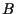
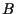

Next: Pareto set
Up: P
Previous: Parent
Pareto optimality
optimality criterion for optimization problems with multi-criteria
objectives
(multi-criteria optimization).
A state  (a set of
object parameters)
is said to be Pareto optimal, if there is no other state 
dominating the state with respect to a set of
objective functions.
A state dominates a state , if is better than in at least
one objective function and not worse with respect to all other objective
functions.
(a set of
object parameters)
is said to be Pareto optimal, if there is no other state 
dominating the state with respect to a set of
objective functions.
A state dominates a state , if is better than in at least
one objective function and not worse with respect to all other objective
functions.
Hans-Georg Beyer
2002-02-25